도시계획기사 (2019-03-03 기출문제)
1과목: 도시계획론
1. 아래 그림은 도시화의 단계와 직접 이익의 발생 관계에 대한 것이다. 각 구간 A - B - C에 알맞은 도시화 단계를 순서대로 올바르게 나열한 것은?
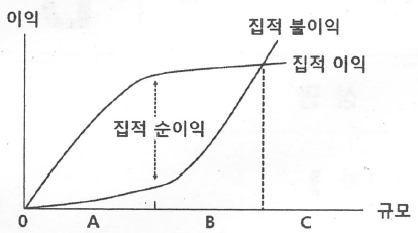
- 집중적 도시화 - 역도시화 - 분산적 도시화
- 분산적 도시화 - 탈도시화 - 집중적 도시화
- 집중적 도시화 - 분산적 도시화 - 역도시화
- 분산적 도시화 - 집중적 도시화 - 역도시화
(정답률: 84%)

2. 도시 조사 자료에 대한 설명으로 옳지 않은 것은?
- 2차 자료에 비해 1차 자료는 비교적 적은 노력과 비용으로 계획가가 원하는 정확한 정보를 얻을 수 있다.
- 도시계획을 위한 도시 조사는 1차 자료에 대한 조사와 2차 자료에 대한 조사를 병행하는 것이 일반적이다.
- 1차 자료는 도시계획의 대상이 되는 단위 지역이나 당해 지역의 주민들로부터 현지 지역이나 당해 지역의 주민들로부터 현지 조사나 관찰, 면접 등을 통해서 직접적으로 도출한 자료이다.
- 2차 자료는 연구자가 탐구하고자 하는 현상에 대한 정보를 담고 있는 기존의 여러 가지 기록을 의미하는 것으로 서적이나 간행물, 각종 통계 자료 등이 해당된다.
(정답률: 91%)
3. 미래 사회에 대비한 새로운 도시 계획 패러다임의 방향으로 옳지 않은 것은?
- 시민 참여 확대와 개발 주체의 다양화
- 입체적 및 기능 통합적 토지 이용 관리
- 자원 및 에너지 절약형 도시 개발로의 전환
- 생태 환경 보존을 위한 도시와 농촌을 분리하여 계획 수립
(정답률: 93%)
4. 무질서한 도시 팽창 및 직주 분리로 인한 이동거리 확대에 따른 불필요한 에너지 소비와 공해 발생 등을 방지하고 해소하기 위한 도시개발 이론은?
- 유 - 시티(U-City)
- 에코 - 시티(Eco-City
- 스마트 시티(Smart City)
- 컴팩트 시티(Compact City)
(정답률: 85%)
5. 경관의 유형 구분에 대한 설명으로 옳지 않은 것은?
- 경관의 현상에 따라 부감경, 양감경, 수평경으로 분류할 수 있다.
- 경관 자원의 특성에 따라 자연경관, 인공경관으로 구분할 수 있다.
- 경관 자원의 형태에 따라 점적인 형태, 선적인 형태, 면적인 형태로 구분할 수 있다.
- 경관의 대상 범위에 따라 광역적 경관, 도시적 경관, 지구적 경관으로 분류할 수 있다.
(정답률: 70%)
6. 하워드(Ebenezer Howard)가 주장한 전원도시에 대한 설명으로 옳지 않은 것은?
- 도시의 계획 인구를 제한하였다.
- 철도와 도로로 연결되는 위성도시가 발달하게 되었다.
- 도시 발달에 따른 개발 이익은 공유화하되 토지는 사유화를 원칙으로 하였다.
- 도시 주위에 넓은 농업 지대를 영구히 보전하여 도시와 농촌의 장점을 결합하였다.
(정답률: 81%)
7. 장래 인구 예측에 있어서 초기년도와 최종년도의 인구만을 고려하여 증가율을 산정할 경우 해당기간 동안 인구의 증감이 교차되는 도시에서 적용하기가 어려운데 이와 같은 결점을 보완한 인구 예측 방법은?
- 등차급수법
- 등비급수법
- 최소자승법
- 회귀분석법
(정답률: 74%)
8. 도시 지역의 경제를 분석하는 방법으로 수출기반모형에 대한 설명으로 옳지 않은 것은?
- 수출기반모형은 수출산업과 수입산업으로 구분한다.
- 수출산업과 수입산업의 구분은 민가부문에만 해당되고 공공부문은 제외된다.
- 수출산업이랑 지역 내에서 생산된 상품이나 서비스가 최종적으로 지역 외부인에 의해 소비되는 산업을 말한다.
- 수입산업이란 지역 내에서 생산된 제품이나 서비스가 지역 외부로 수출되지 않고 지역주민들에 의해 소비되는 산업을 말한다.
(정답률: 76%)
9. 도시화에 따른 집적의 이익 중에서 외부이익에 대한 설명으로 옳지 않은 것은?
- 접촉 이익이 있다.
- 승수의 효과가 있다.
- 규모의 경제 효과가 있다.
- 예비능력의 비축효과가 있다.
(정답률: 43%)
10. 저층 주택을 중심으로 편리한 주거 환경 조성을 위한 용도지역은?
- 제1종 전용주거지역
- 제2종 전용주거지역
- 제1종 일반주거지역
- 제2종 일반주거지역
(정답률: 77%)
11. 장기계획의 신뢰성 제고, 의사결정 절차의 일원화, 조직체의 통합 운용, 자원 배분의 합리화와 예산절약 등의 장점이 있으나 목표 설정의 어려움, 정보 관리 체제의 미숙, 계량화의 어려움 등의 한계가 있는 예산 편성 제도는?
- 계획 예산제도
- 품목별 예산제도
- 영기준 예산제도
- 성과주의 예산제도
(정답률: 81%)
12. 도시계획 실행을 위한 중장기 재정계획 수립 과정의 순서로 옳은 것은?
- 총괄계획 작성 → 계획의 여건분석·예측 → 부문별 투자조정 → 기본방향과 계획지표 설정
- 총괄계획 작성 → 기본방향과 계획지표 설정→ 계획의 여건분석·예측 → 부문별투자조정
- 기본방향과 계획지표 설정 → 부문별투자조정 → 계획의 여건분석·예측 →총괄계획 작성
- 기본방향과 계획지표 설정→ 계획의 여건분석·예측 → 부문별투자조정 → 총괄계획 작성
(정답률: 87%)
13. 다음 조건에 따라 필요한 주거지역의 면적은?
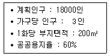
- 1000000m2
- 1800000m2
- 2000000m2
- 3000000m2
(정답률: 67%)
14. 도시·군관리계획의 입안권자에 해당되지 않는 자는?
- 군수
- 구청장
- 광역시장
- 특별자치도지사
(정답률: 77%)
15. 도시공원에 대한 설명으로 옳은 것은?
- 근린공원은 규모에 따라 근린생활권, 도보권, 도시지역권, 광역권으로 구분할 수 있다.
- 체육공원은 어린이의 보건 및 정서생활의 향상에 기여하기 위하여 설치하는 공원이다.
- 소공원은 하천 및 호수 등의 수변과 접하고 있어 친수공간을 조성할 수 있는 곳에 주로 설치한다,
- 주제공원의 종류로 역사공원, 문화공원, 수변공원, 묘지공원, 체육공원, 국가도시공원 등이 있다.
(정답률: 68%)
16. 토지 이용 과정에서 도시 문제를 발생시키는 주요 요인으로 옳지 않은 것은?
- 외부 효과
- 토지의 난개발
- 이용 주체간의 경합
- 기능 중심의 교통 계획과 차별성
(정답률: 70%)
17. 다비도프(Paul Davidoff)에 의해 주창된 옹호적 계획에 대한 설명으로 옳지 않은 것은?
- 강자에 대한 약자의 이익을 보호하는데 적용하였다.
- 인간의 존엄성에 기초를 두는 신휴머니즘적 사고와 관련이 깊다.
- 사회 정책의 수립 과정을 막후의 협상에서 공개적인 계획 과정으로 바뀌도록 하였다.
- 다원적인 가치가 혼재하고 있는 사회에서는 단일 계획안보다는 복수의 다원적인 계획안들이 바람직한 것으로 하였다.
(정답률: 51%)
18. 중세 도시계획의 특징으로 옳지 않은 것은?
- 광장이 중심이다.
- 가로망은 규칙적이다.
- 성곽을 중심으로 밀집된 구조이다.
- 시설의 규모가 인간 척도에 맞는 구조이다.
(정답률: 73%)
19. 버제스(Burgess)가 주장한 도시공간이론으로 수공업이나 소규모의 공장이 입지함으로써 주거환경이 악화되고 지가가 하락하여 비공식 부문의 종사자들이 유입되면서 슬럼 및 불량주택지구를 형성하는 지대는?
- 점이지대
- 슬럼지대
- 통근자지대
- 노동자 주택지대
(정답률: 76%)
20. 광역도시계획의 지정 목적을 이루는 데 필요한 사항이 아닌 것은?
- 경관계획에 관한 사항
- 광역 시설 설치에 소요되는 예산에 관한 사항
- 광역계획권의 공간 구조와 기능 부담에 관한 사항
- 광역계획권의 녹지 관리 체계와 환경 보전에 관한 사항
(정답률: 71%)
2과목: 도시설계 및 단지계획
21. 다음 중 페리(C. A. Perry)가 주장한 근린주구의 개념과 가장 거리가 먼 것은?
- 근린주구의 경계는 간선도로에 의해 구획되도록 한다.
- 내부의 가로체계는 통과교통을 배제할 수 있도록 한다.
- 학교, 공공건축용지는 단지의 중심 위치에 적절히 통합해야 한다.
- 초등학교 1개를 유지할 수 있는 인구규모를 가지며, 물리적 규모는 인구밀도와 상관없이 동일하여야 한다.
(정답률: 85%)
22. 주거환경을 구성하는 요소를 물리적 요소, 사회적 요소, 생태적 요소로 구분할 때, 생태적 요소에 포함되지 않는 것은?
- 소음
- 배수
- 지세
- 이미지
(정답률: 74%)
23. 단지계획 중 공원 및 녹지계획과 관련된 설명으로 적절하지 않은 것은?
- 기존의 생태환경은 최대한 보존·활용한다.
- 비옥도가 양호한 표토층은 채취·보관 후 활용하도록 한다.
- 친환경적인 단지조성을 위해 자연지형은 최대한 살리면 절성토를 최소화하여야 한다.
- 소수의 대규모 공원보다는 다수의 소공원을 조성하는 것이 생태성 강화 및 종의 다양성 확보를 위해 바람직하다.
(정답률: 84%)
24. 단독주택지의 소가구 구성에서 다음의 가구 크기 중 가장 일반적인 규모로 옳은 것은?
- 장변 60m, 단변 20m
- 장변 120m, 단변 50m
- 장변 220m, 단변 150m
- 장변 500m, 단변 250m
(정답률: 84%)
25. 주거단지계획은 인간의 행위를 담는 공간을 창조하는 것으로, 그 기준이 되는 인간의 척도를 나타내는 내용 중 옳지 않은 것은?
- 르 꼬르뷔제는 인체와 관련한 모듈을 사용함에 있어 1:1.618의 황금비 사용을 주장하였다.
- 페리는 주거단위는 초등학교 두 개의 단위에 필요한 인구규모를 가져야 한다고 주장하였다.
- 메르텐스는 시각적 측면에서 인간이 대상물을 명백하고 쉽게 지각할 수 있는 최대각도를 약 27°라 규정하였다.
- 독시아디스는 고대도시 그리스를 연구한 결과 인간이 걷기 편한 최대의 거리를 1Km(10~20분)로 결론내렸다.
(정답률: 80%)
26. 단지계획에서 보·차 공존도로의 설치 목적과 가장 거리가 먼 것은?
- 노상주차 억제를 통한 안전성 확보
- 통과교통 억제를 통한 안전성 확보
- 식재 공간 확보를 통한 쾌적성 증대
- 국지도로와의 교차지점 감소를 통한 효율성 확보
(정답률: 58%)
27. 다음 중 케빈 린치(Kevin Lynch)가 제안한 도시 이미지 형성의 5가지 요인에 해당하지 않는 것은?
- 결절점(node)
- 지구(district))
- 중심지(C.B.D)
- 랜드마크(landmark)
(정답률: 86%)
28. 도시 안에서 상업 등 특정기능을 강화하거나 도시팽창에 따라 기존 도시의 기능을 흡수·보완하는 새로운 시가지를 개발하고자 하는 경우의 지구단위계획구역의 지정 목적은?
- 복합용도개발
- 신시가지의 개발
- 기존 시가지의 관리
- 기존 시가지의 정비
(정답률: 79%)
29. 도시·군계획시설인 체육시설을 설치할 수 있는 용도지역은?
- 준주거지역
- 보전녹지지역
- 유통상업지역
- 일반공업지역
(정답률: 78%)
30. 도시인구가 20만 명, 취업률이 30%, 제조업인구구성비가 25%, 제조업인구 1인당 점유토지면적이 300m2인 A지역의 공업단지 총 소요면적은? (단, 공공용지율은 40%이다.)
- 600ha
- 750ha
- 900ha
- 1100ha
(정답률: 72%)
31. 단지 가로경관의 연출기법에 관한 설명으로 옳지 않은 것은?
- 보도: 보행자의 움직임을 고려한 효과 있는 배열 필요
- 집산도로변: 승용차·특수버스가 주체인 도로는 다양한 변화를 주고 서서히 간선도로와 연결되도록 함
- 국지도로: 굴곡이 있는 가로 형태는 운전자의 주의를 집중시키고, 속도를 감소시키는 역할을 하므로 세가로 계획에 적용
- 간선도로 및 보조간선도로변: 가까운 거리에 있는 것보다 원거리의 경관에, 세부(detail)보다는 매스(mass)의 형태에 따른 경관이 중요함
(정답률: 67%)
32. 도시설계 작성과정의 기본구상 흐름도에 대한 순서가 올바르게 나열된 것은?
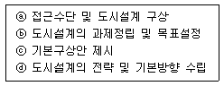
- ⓑ → ⓓ → ⓐ → ⓒ
- ⓒ → ⓐ → ⓑ → ⓓ
- ⓐ → ⓑ → ⓓ → ⓒ
- ⓓ → ⓒ → ⓐ → ⓑ
(정답률: 78%)
33. 커뮤니티 구성의 세 가지 기본요소에 해당하지 않는 것은?
- 영역성
- 공동유대
- 주거밀도
- 사회적 상호작용
(정답률: 73%)
34. 주택단지의 총세대수가 2000세대 이상인 경우 기간도로와 접하거나 기간도로로부터 당해 단지에 이르는 진입도로의 폭은 최소 얼마 이상이어야 하는가?
- 8m 이상
- 12m 이상
- 15m 이상
- 20m 이상
(정답률: 77%)
35. 현대의 모더니즘에 관한 주거단지개발의 대안으로서 혼합용도를 지향하며 대중교통 및 보행으로 이동이 가능한 권력들이 자율적으로 성장하는 커뮤니티 개발모델은?
- 어반빌리지(urban village)
- 스마트성장(smart growth)
- 지속가능 개발(sustainable development)
- 전통적 근린지역(traditional neighborhood district)
(정답률: 60%)
36. 국지도로의 형태 중 하나인 루프형 도로에 대한 설명으로 옳지 않은 것은?
- 불필요한 차량의 진입이 배제된다.
- 교차점이 많아 방향성이 불분명하다.
- 주거환경의 안전성이 어느 정도 확보된다.
- 외곽부에서 내부로의 진입이 제한되므로 차량의 우회교통이 발생한다.
(정답률: 79%)
37. 조선시대 건조된 읍성(邑城)에 대한 설명으로 옳지 않은 것은?
- 우리나라의 전통적인 지리적 방식에 의해 입지가 결정되었다.
- 지역의 지형특징에 따라 주요 시설들의 배치가 이루어졌다.
- 외부의 적으로부터 효과적인 방어를 위해 주로 산 정상에 건조되었다.
- 당시 지방의 통치를 위해 관료를 파견하기 위한 행정도시의 성격을 갖는다.
(정답률: 83%)
38. 건축법령상 공동주택의 구분에 따른 분류가 옳지 않은 것은? (단, 2개 이상의 동을 지하주차장으로 연결하는 경우에는 각각의 동으로 본다.)
- 주택으로 쓰는 층수가 6개 층의 주택은 아파트다.
- 주택으로 쓰는 1개 동의 바닥면적 합계가 450m2인 3층의 주택은 다세대주택이다.
- 주택으로 쓰는 1개 동의 바닥면적 합계가 660m2인 5층의 주택은 연립주택이다.
- 종업원을 위하여 쓰이는 것으로서 1개 동의 공동취사시설 이용 세대 수가 전체의 50%이상인 것은 기숙사이다.
(정답률: 67%)
39. 다음 그래프 중 공간의 다양성과 흥미와의 관계를 가장 잘 나타낸 것은?
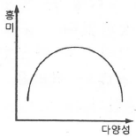
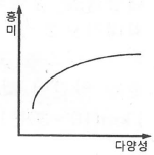
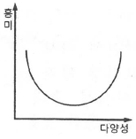
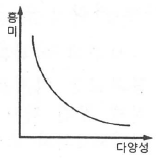
(정답률: 71%)
40. 지구단위계획구역의 지정 절차에서 국토교통부장관이 결정하는 경우 심의를 거쳐야 하는 곳은?
- 시·도공동위원회
- 중앙도시계획위원회
- 시·도도시계획위원회
- 시·군도시계획위원회
(정답률: 75%)
3과목: 도시개발론
41. 도시개발사업의 관련 사업이 아닌 것은?
- 일단의 주택지 조성사업
- 일단의 공업용지 조성사업
- 시가지 조성사업
- 수도권 정비사업
(정답률: 67%)
42. 경제성 분석 시, 계량화 및 가치화가 불가능한 효과에 금전적 가치를 부여해야 할 필요성이 있는 경우 사용하는 방법은?
- 권리분석
- 시장성분석
- 변이-할당 분석
- 조건부 가치측정법
(정답률: 72%)
43. 도시개발 전략 수립 시 고려하여야 할 사항이 아닌 것은?
- 개인적 성격과 취미
- 재무적 타당성
- 지분 구조
- 개발 대상지
(정답률: 88%)
44. Calthorpe이 제시한 TOD의 7가지 원칙에 해당되지 않는 것은?
- 지구 내에는 걸어서 목적지까지 갈 수 있는 보행 친화적인 가로망 구성
- 기존 근린지구 내에 대중교통 노선을 따라 재개발 촉진
- 공공공간을 건물배치 및 근린생활의 중심지로 조성
- 주택의 유형, 밀도, 비용 등은 고층, 고밀, 고급화를 지향하고 통일된 유형을 배치
(정답률: 81%)
45. 개발형태에 의한 개발사업의 분류는 크게 신개발사업과 재개발사업으로 분류되고 있는데, 다음 중 신개발사업에 포함되지 않는 것은?
- 건축물 증개축사업
- 토지형질변경사업
- SOC사업
- 도시개발사업
(정답률: 77%)
46. 부동산펀드의 유형을 운용시장의 형태에 따라 구분할 때, 다음 중 민간시장(private market) 부문에 해당하지 않는 것은?
- 직접투자
- 사모부동산 펀드
- 상업용저당채권
- 직접대출(loans)
(정답률: 71%)
47. 부동산신탁의 종류 중 임대형 토지신탁과 분양형 토지신탁이 속하는 종류는?
- 관리형 신탁
- 운용형 신탁
- 처분형 신탁
- 관리·처분형 신탁
(정답률: 62%)
48. 재개발의 유형에 대한 설명이 옳은 것은?
- 철거 재개발(redevelopment):도시환경 및 시설에 있어서 불량 또는 노후화 현상이 현재까지는 발생하지 않았으나 현 상태로 방치 할 경우 환경악화가 예상되는 지역에 예방적 조처로 시행하는 방식
- 수복 재개발(rehabilitation): 관리상 부실로 인하여 도시환경이 악화될 우려가 있거나 이미 악화된 지역에 대하여 기존시설을 보존하면서 구역 전체의 기능과 환경을 회복하거나 개선하는 소극적인 방식
- 보존 재개발(rehabilitation): 낙후되고 노후화된 기존 도시지역의 시설을 보수, 확장, 새로운 시설을 첨가하는 방법을 통하여 도시환경을 개선하는 방식
- 개량 재개발(improvement): 기존의 시설을 전면적으로 철거하고 새로운 시설물로 대체시켜 쾌적하고 능률적이며 기능적인 도시환경을 창출해내는 적극적인 방식
(정답률: 72%)
49. 다음 중 계획단위개발(PUD)의 4단계 시행절차에 해당하지 않는 것은?
- 현황조사분석
- 개략개발계획
- 예비개발계획
- 최종개발계획
(정답률: 53%)
50. 다음 중 역사보존도시에 대한 설명으로 옳지 않은 것은?
- 역사보존도시는 개성적인 역사환경을 통해 도시에 다양성을 부여한다.
- 역사환경은 도시 내 중요한 문화 창조의 자원이며 도시 활성화의 자원으로 활용이 가능하다.
- 역사보존도시의 전통적 기반 보존을 통해 다른 도시와의 차별성을 부각할 수 있다.
- 역사보존도시는 과거의 역사와 현재의 조화보다는 과거의 역사환경보존에 더 중심을 두어야 한다.
(정답률: 87%)
51. 도시개발 여건 분석에 대한 설명으로 틀린 것은?
- 부지의 이용가치를 극대화하기 위해 그 부지의 입지조건을 면밀히 분석할 필요가 있다.
- 입지의 특성은 물리적 요인과 지리적 요인, 법적·제도적 요인, 경제적 요인 등으로 구분할 수 있다.
- 입지분석은 개발의 컨셉을 사업화하기 위한 일련의 타당성 분석 과정 가운데 가장 먼저 행해지게 된다.
- 물리적 요인을 분석하는 것을 일반분석이라 하고, 지리적 요인 및 제도적·경제적 요인을 분석하는 것을 부지분석이라 한다.
(정답률: 69%)
52. 우리나라 도시개발의 흐름에서 제조업과 관광업 등 산업입지와 경제활동을 위해 민간기업 주도로 개발된 도시로, 산업·연구와 주택·교육·의료·문화 등 자족적 복합기능을 가진 도시조성을 위해 개발된도시는?
- 기업도시
- 공업도시
- 혁신도시
- 행정복합도시
(정답률: 65%)
53. 주거지역의 양호한 환경조성과 시가지의 도시경관을 보호하기 위해 지정하는 지구는 무엇인가?
- 자연경관지구
- 중심지미관지구
- 시가지경관지구
- 일반미관지구
(정답률: 84%)
54. 다음 중 도시개발사업 과정에서의 허가(許可)에 대한 설명으로 옳은 것은?
- 허가를 받지 않고 한 행위는 처벌의 대상이 되지 않는다.
- 법령에 의하여 금지되어 있는 행위를 해체하여 적법하게 하는 것을 의미한다.
- 제3자의 행위를 보충하여 그 법률상의 효력을 완성시키는 행위를 말한다.
- 국가 또는 지방자치단체가 특정 행위에 대하여 부여하는 동의의 뜻이다.
(정답률: 74%)
55. 지분조달방안의 수법으로 2인 이상의 주체(극 소수의 개인투자가 또는 기관)가 부동산 개발 등의 목적을 달성하기 위해 공동으로 사업하는 기업 형태는?
- 합작사업(Joint Venture)
- 신디케이트(Syndicate)
- 유한 파트너십(LP: Limited Partnership)
- 유한 책임 파트너십(LLP: Limited Liability Partnership)
(정답률: 62%)
56. 신고전주의학파의 경제이론에 의거하여, 도시 중심지역에서 지대가 높아지는 원인으로 가장 적합한 것은?
- 교통비용과 지대와의 상쇄관계
- 노동생산성의 반영
- 토지이용의 공적규제
- 개발금융의 활성화
(정답률: 71%)
57. 중력모형(Gravity Model)에 관한 설명으로 옳은 것은?
- 개별 소매정의 고객흡입력을 계산하는 방법
- 거리요소, 규모요소, 상수의 세 가지 요소에 의한 모형
- 각 변수들이 수요에 미치는 영향의 정도를 결정해주는 방법
- 소비자가 주어진 상업시설을 이용할 확률은 상업시설의 크기에 비례하고 그곳까지 이동하는데 걸리는 시간에 반비례한다는 개념을 적용
(정답률: 53%)
58. 다음 중 “재개발 시행방식”에 따라 분류한 것이 아닌 것은?
- 전면재개발
- 수복재개발
- 주거재개발
- 보존재개발
(정답률: 80%)
59. 수익성지수(Profitability Index, PI)에 대한 설명으로 틀린 것은?
- 수익성지수가 1보다 클 때 해당 프로젝트는 사업성이 있는 것으로 평가한다.
- 프로젝트로부터 발생하는 할인된 전체 수입을 할인된 전체 비용으로 나눈 값이다.
- 순현재가치(NPV)가 0이면 수익성지수도 0이다.
- 여러 프로젝트의 평가에서 순현재가치법과 수익성지수평가법은 서로 다른 대안을 택할 수 있다.
(정답률: 76%)
60. 다음 중 ( ) 안에 들어갈 수치로 모두 옳은 것은?
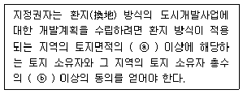
- ⓐ 1/2, ⓑ 1/2
- ⓐ 1/2, ⓑ 2/3
- ⓐ 2/3, ⓑ 2/3
- ⓐ 2/3, ⓑ 1/2
(정답률: 83%)
4과목: 국토 및 지역계획
61. 우리나라 국토계획의 필요성에 대한 설명으로 가장 거리가 먼 것은?
- 국토자원이용의 효율성 증대
- 향상된 생활환경의 균등한 공급
- 지역격차 완화 및 균형된 지역발전
- 생활여건이 우수한 지역이 더욱 발전하는 기반마련
(정답률: 87%)
62. 다음 중 광역권에 대한 설명으로 가장 거리가 먼 것은?
- 일반적으로 생활권 중심의 광역권은 통근이나 통학이 중심이다.
- 일반적으로 생활권 중심의 광역권은 교외화 현상과 관련 있다.
- 일반적으로 생활권 중심의 광역권이 경제권 중심의 광역권보다 넓다.
- 일반적으로 생활권 중심의 광역권과 경제권 중심의 광역권으로 구분할 수 있다.
(정답률: 77%)
63. 지역발전이론 중 1980년대 말과 1990년대 초에 핵심적으로 부각된 이론은?
- 기초수요이론
- 지역균형이론
- 유연적 축적론
- 지역불균형발전이론
(정답률: 30%)
64. 도시체계 속에서 한 도시의 규모는 그 도시의 등급에 역비례한다는 관계를 설명하는 이론은?
- 순위-규모 법칙(Rank-size Rule)
- 균형화이론(Equalization Theories)
- 표준화기법(Standardization Technique)
- 연쇄체계모형(Recursive System Model)
(정답률: 86%)
65. 크리스탈러(Christaller)의 중심지 이론에서 1개의 중심지가 그 중심지 및 3개의 하위 중심지를 포섭하는 원리는?
- 교통의 원리
- 근린의 원리
- 시장의 원리
- 행정의 원리
(정답률: 51%)
66. 수출기반모형(export base model)에서 산업들의 수출량을 계산하는데 있어 기본 가정이 아닌 것은?
- 폐쇄의 경제
- 동일한 노동 생산성
- 동일한 소득수준(또는 소비수준)
- 지역내 투자된 하부시설의 동일성
(정답률: 63%)
67. 국토 및 지역계획의 수립절차로 가장 적절한 것은?
- 문제인식 → 현황조사 → 목표설정 → 계획수립 → 집행 → 평가 → 환류
- 목표설정 → 문제인식 → 현황조사 → 계획수립 → 집행 → 평가 → 환류
- 목표설정 → 현황조사 → 문제인식 → 계획수립 → 집행 → 평가 → 환류
- 문제인식 → 목표설정 → 계획수립 → 현황조사 → 집행 → 평가 → 환류
(정답률: 64%)
68. 다음의 대도시성장관리 정책에 대한 설명으로 옳지 않은 것은?
- 종주도시권의 다핵개발은 자유방임정책보다 오히려 대도시권으로의 인구와 산업의 집중을 유발한다.
- 반자력중심도시의 육성은 대도시의 통근권밖인 60~160km 떨어진 도시를 육성하는 정책이다.
- 대도시 집중억제의 한 수단으로서 소규모 서비스 중심지 및 농촌의 개발은 소요투자의 효율성에 문제가 있다.
- 대도시의 관리정책으로서 지역중심도시와 하위체계 개발시책은 투자재원의 한계성 때문에 모든 지역을 동시에 개발할 수 없다.
(정답률: 60%)
69. 친환경적 공간계획(국토계획, 지역계획, 도시계획)의 수단으로 적합하지 않은 것은?
- Green GNP 개념 도입
- 거대도시와 도시광역화 개발
- 압축도시(Compact City) 개발
- 복합토지이용(Mixed Land Use) 도입
(정답률: 84%)
70. 다음의 조건에서 청주의 A산업에 대한 입지계수(L.Q)는?
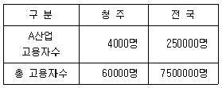
- 0.07
- 0.75
- 1.67
- 2.00
(정답률: 78%)
71. 제4차 국토종합계획 수정계획(2011~2020)의 기본목표가 아닌 것은?
- 살기좋은 복지국토
- 품격있는 매력국토
- 경쟁력있는 통합국토
- 지속가능한 친환경국토
(정답률: 54%)
72. 계획이란 ‘선택을 통해 가장 적절한 미래의 행위를 결정하는 일련의 절차’라고 정의한 학자는?
- C.A. Perry
- Davidoff와 Reiner
- E. Howard
- Le Corbusier
(정답률: 65%)
73. GIS를 활용한 다각형 자료에 대한 공간분석 중 그 성격이 다른 것은?
- 다각형 중첩(polygon overlay)
- 공간적 집합(spatial aggregation)
- 다각형 내 점(point-in-polygon) 분석
- 코로플레스 도면화(choroplethic mapping)
(정답률: 34%)
74. 도시나 지역의 인구 예측 방법에서 인구 성장 한계를 나타내는 인구 추정식은?
- 선형식
- 포물선식
- 지수 곡선식
- 로지스틱 곡선식
(정답률: 72%)
75. 다음 중 토지의 환경성을 평가하여 보전이 필요한 지역과 개발이 가능한 지역을 구분하고 그 결과를 지형도에 표시한 도면은?
- 비오톱지도
- 생태·자연도
- 토지적성평가도
- 국토환경성평가지도
(정답률: 55%)
76. 대도시 성장관리와 관련된 설명으로 가장 거리가 먼 것은?
- 도시가 성장함에 따라 규모와 생산성은 정비례하여 증가한다.
- 집적의 이익과 불이익을 명시적으로 밝히는데는 큰 어려움이 있다.
- 외부효과 때문에 개인과 사회가 받는 이익과 비용이 서로 차이가 있다.
- 일반적으로 도시규모에 따라 도시기반시설 비용은 U자형 곡선을 나타낸다.
(정답률: 44%)
77. 후퍼-피셔의 지역발전 5단계설의 두 번째 단계에 해당하는 것은?
- 2차 산업의 도입단계
- 다양한 공업화의 이행단계
- 수출용 3차 산업 전문화 단계
- 1차 산업 전문화 및 지역 간 교역의 단계
(정답률: 55%)
78. 지역계획(regional planning)에 대한 설명으로 가장 옳은 것은?
- 지역계획은 국가 경제성장 정책의 수행을 위한 사회 경제적 수단을 제시하는 전략적 종합 계획이다.
- 지역계획은 최소 1개 이상의 공간 단위를 대상으로 한 전국계획(national planning) 하위 체계의 공간 계획이다.
- 지역계획은 도시의 광역화에 따라 발생하는 문제를 효과적으로 대처하기 위한 중앙정부에 의한 조정적 계획이다.
- 지역계획은 최하위 공간 단위계획(local planning)과 전국계획(national planning) 사이의 중간 계층적 공간 계획을 의미한다.
(정답률: 62%)
79. 다음 중 수도권 인구 및 산업 집중의 억제 대책이 아닌 것은?
- 공장의 신·증설 억제
- 대학의 신·증설 억제
- 임대주택의 공급 확대
- 중앙행정 권한의 지방 이양
(정답률: 80%)
80. M시의 수출산업 종사인구(EB)는 50000명, 지역산업 종사인구(EN)는 100000명이다. M시의 수출산업 종사자 1명을 고용한다면 늘어나는 총 고용자 수(ET)는?
- 1명
- 2명
- 3명
- 4명
(정답률: 56%)
5과목: 도시계획관계법규
81. 도시공원 및 녹지 등에 관한 법률에 따른 생활권공원의 종류에 해당하지 않는 것은?
- 소공원
- 근린공원
- 묘지공원
- 어린이공원
(정답률: 88%)
82. 국토기본법령상 국토조사에 대한 아래 설명 중 ( )안에 들어갈 용어가 바르게 나열된 것은?
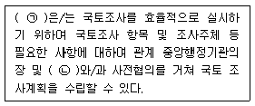
- ㉠ : 국토교통부장관, ㉡ : 시·도지사
- ㉠ : 국토교통부장관, ㉡ : 국토정책위원회
- ㉠ : 국토정책위원회, ㉡ : 시·도지사
- ㉠ : 국토정책위원회, ㉡ : 국토교통부장관
(정답률: 62%)
83. 택지개발지구 내에서 관할 특별자치도지사·시장·군수 또는 자치구의 구청장의 허가를 받아야 하는 행위에 해당하지 않는 것은?
- 죽목의 벌채 및 식재
- 토석의 채취 또는 토지의 굴착
- 건축물의 건축, 대수선 또는 용도변경
- 경작을 위한 토지의 형질변경 또는 관상용 식물의 가식
(정답률: 77%)
84. 관광진흥법에 따른 관광개발계획에 관한 설명으로 옳지 않은 것은?
- 관광개발기본계획은 5년마다 수립한다.
- 확정된 권력계획에 대하여 대통령령으로 정하는 경미한 사항을 변경하는 경우 관계부처의 장과의 협의를 갈음하여 문화체육관광부장관의 승인을 받아야 한다.
- 권역계획에 대하여 대통령령으로 정하는 경미한 사항의 변경에는 관광지 등 면적의 100분의 30 이내의 확대를 포함한다.
- 시·도지사(특별자치도지사는 제외한다.)는 기본계획에 따라 구분된 권역을 대상으로 권역별 관광개발계획을 수립하여야 한다.
(정답률: 45%)
85. 국토의 계획 및 이용에 관한 법률상 도시·군계획시설이 아닌 것은?
- 공동구
- 도축장
- 유수지
- 예식장
(정답률: 68%)
86. 국토교통부장관이 산업단지 외의 지역에서의 공장설립을 위한 입지지정과 지정 승인된 입지의 개발에 관한 기준 작성 시 포함되어야 할 사항으로 옳지 않은 것은?
- 주택건설 및 공급에 관한 사항
- 토지가격의 안정을 위하여 필요한 사항
- 산업시설 용지의 적정이용기준에 관한 사항
- 환경보전 및 문화재 보존을 위하여 필요한 사항
(정답률: 46%)
87. 수도권정비계획법령상 대규모 개발사업의 종류에 해당하지 않는 택지조성사업은? (단, 면적이 모두 100만m2 이상인 경우)
- 「주택법」에 따른 주택건설사업
- 「택지개발촉진법」에 따른 택지개발사업
- 「도시 및 주거환경정비법」에 따른 주거환경개선사업
- 「산업입지 및 개발에 관한 법률」에 따른 산업단지 및 특수지역에서의 주택지 조성사업
(정답률: 55%)
88. 택지개발지구가 고시된 날부터 얼마 이내에 택지개발사업 실시계획의 작성 또는 승인신청을 하지 아니하는 경우, 그 지정이 해제되는가?
- 6개월 이내
- 1년 이내
- 2년 이내
- 3년 이내
(정답률: 44%)
89. 수도권정비계획법령상 관계 행정기관의 장이 성장관리권역에서 공업지역으로 지정할 수 없는 지역은?
- 인구증가율이 수도권의 평균 인구증가율보다 낮은 지역
- 공장이 밀집된 지역을 재정비하기 위하여 필요한 지역
- 과밀억제권역에서 이전하는 공장 등을 계획적으로 유치하기 위하여 필요한 지역
- 개발 수준이 다른 지역에 비하여 뚜렷하게 낮은 지역의 주민 소득 기반을 확충하기 위하여 필요한 지역
(정답률: 56%)
90. 자연재해대책법상 자연재해가 발생하거나 발생할 우려가 있는 경우 신속한 국가 지원을 위하여 긴급에너지 수급 지원 등에 관한 사항에 대하여 긴급지원계획을 수립하여야 하는 중앙행정기관은?
- 조달청
- 국토교통부
- 산업통상자원부
- 과학기술정보통신부
(정답률: 58%)
91. 국토의 계획 및 이용에 관한 법률상 국토교통부장관, 시·도지사 또는 대도시 시장은 도시·군계획시설사업의 실시계획을 인가하려면 미리 대통령령으로 정하는 바에 따라 그 사실을 공고하고, 관계 서류의 사본을 며칠 이상 일반이 열람할 수 있도록 하여야 하는가?
- 3일
- 5일
- 7일
- 14일
(정답률: 77%)
92. 택지개발촉진법상의 규정 내용을 기술한 것으로 옳은 것은?
- 택지개발사업에 관한 자료 제출 또는 보고를 거짓으로 한 자는 1년 이하의 징역 또는 1천만원 이하의 벌금에 처한다.
- 시행자가 행한 처분에 이의가 있을 때 국토교통부장관에게 1개월 이내에 행정심판을 제기해야 한다.
- 지정하려는 택지개발지구의 면적이 대통령령으로 정하는 규모 이상인 경우에는 국토교통부장관의 승인을 받아야 한다.
- 택지개발사업 실시계획 승인신청서에는 수용할 토지등의 소유권 및 소유권 이외에 권리자의 성명, 주소를 포함한다.
(정답률: 48%)
93. 대기오염, 소음, 진동, 악취 그 밖에 이에 준하는 공해와 각종 사고나 자연재해, 그 밖에 이에 준하는 재해 등의 방지를 위하여 설치하는 녹지는?
- 경관녹지
- 공원녹지
- 완충녹지
- 연결녹지
(정답률: 84%)
94. 주택법상 각각 별개의 주택단지로 볼 수 있도록 해당 토지의 분리가 가능한 시설에 해당하지 않는 것은?
- 폭 15m 이상인 일반도로
- 철도·고속도로·자동차전용도로
- 폭 8m 이상인 도시계획예정도로
- 일반국도·특별시도·광역시도 또는 지방도
(정답률: 56%)
95. 다음 중 아래에서 설명하는 지역계획은?
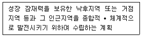
- 지구단위계획
- 지역개발계획
- 수도권정비계획
- 수도권 발전계획
(정답률: 77%)
96. 택지개발촉진법에 의한 택지개발 사업의 시행자가 될 수 없는 기관은?
- 조합
- 순천시청
- 강남구청
- 한국토지주택공사
(정답률: 61%)
97. 학교의 결정기준에 대한 내용으로 옳지 않은 것은?
- 학교주변에는 녹지 등 차단 공간을 둘 것
- 대학은 당해 대학의 기능과 특성에 적합하도록 하여야 하며 대학의 배치에 관하여는 광역도시계획을 고려할 것
- 통학에 위험하거나 지장이 되는 요인이 없어야 하며, 교통이 빈번한 도로·철도 등이 관통하지 아니할 것
- 통학권의 범위, 주변환경의 정비상태 등을 종합적으로 검토하여 건전한 교육목적 달성과 주민의 문화교육향상에 기여할 수 있는 중심시설이 되도록 할 것
(정답률: 66%)
98. 수도권정비계획을 실행하기 위한 소관별 추진계획을 수립할 수 없는 자는?
- 군수
- 도지사
- 서울특별시장
- 중앙행정기관의 장
(정답률: 60%)
99. 도시 및 주거환경정비법상 정비사업을 지정하는데 적합하지 않은 지역은?
- 도시저소득 주민이 집단거주하는 지역
- 현재의 지구환경은 양호하나 장래 불량하게 될 우려가 있는 지역
- 정비기반시설이 열악하고 노후·불량건축물이 밀집한 지역
- 정비기반시설은 양호하나 노후·불량건축물에 해당하는 공동주택이 밀집한 지역
(정답률: 60%)
100. 교통광장의 결정기준에 대한 설명으로 옳지 않은 것은?
- 교통광장은 교차점광장, 역전광장 및 주요시설광장으로 구분한다.
- 역전광장은 대중교통수단 및 주차시설과 원활히 연계되도록 설치한다.
- 교차점광장은 혼잡한 주요도로의 교차지점에서 각종 차량과 보행자를 원활히 소통시키기 위하여 필요한 곳에 설치한다.
- 주요시설광장에는 주민의 집회·행사 또는 휴식을 위한 시설과 보행자의 통행에 지장이 없는 시설을 설치한다.
(정답률: 66%)
집중적 도시화는 인구와 경제가 도시 중심지에 집중되는 단계이다. 이 단계에서는 도시 내부의 인프라와 서비스가 발전하며, 경제적 발전과 생활 편의성이 증가한다.
분산적 도시화는 도시의 인구와 경제가 중심지에서 분산되는 단계이다. 이 단계에서는 도시 외곽 지역에 새로운 개발이 이루어지며, 도시의 확장이 이루어진다.
역도시화는 도시의 인구와 경제가 도시 외곽 지역으로 이동하는 단계이다. 이 단계에서는 도시의 중심지에서 인구와 경제가 감소하며, 도시의 공간 구조가 변화한다.
따라서, 집중적 도시화에서는 도시 내부의 인프라와 서비스가 발전하며, 분산적 도시화에서는 도시의 확장이 이루어지고, 역도시화에서는 도시의 공간 구조가 변화한다.